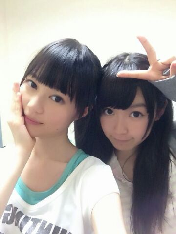

| 2013/08 21 Wed | ひめたん(*>ω<*)そ の329 |
どうも、
ばかリボンですこんばんは。笑
今回の乃木ここは
川後Pがカメラまわしてますよー
斜めから撮ってくれる感じが尊敬(〃ω〃)
でもこれだけは言いたい
ぜーんぜん汚くないよ！
「ばか」リボンじゃないよ！
メンバーさんの間でも
定着しつつあるこのあだ名...
川後Pの愛を感じるね。
ちょーっとかわいさに欠けるけど
嫌いじゃないです
で、でもみなさんは
ばかリボンって呼んじゃだめよー♪
Zepp Sapporo 真夏の全国ツアー2013
来てくださったみなさん
ありがとうございました！
北海道でのライブは初めてとゆーことで
しかもツアー初日とゆーことで
ちょっと不安だったけど
みなさんの声援を受けてパワーもらえました♪
この勢いで全国全公演がんばるぞー( ^ω^ )/
ひめたーん！って声とか
うちわとかサイリウムとか全部届いたよ///
本当にありがとうねっ
やっぱりZeppはファンのみなさんと
距離が近いから好きー♪
そうそう
昨日のセトリは運営さんブログまたは
かなりんブログまで。
昼の部クイズコーナーでは罰ゲームで
チャリ漕ぎました(´・ω・｀)
チャリ乗った瞬間あしつった(´・ω・｀)
ヘアは結局
昼公演...編み込みさらさらストレート
夜公演...編み込みくるくるツイン
でした！冒険女子！
考えてくださったみなさん
ありがとうございました( ^ω^ )
ポニテ派が多かったからいつかやりまーすー

安定のいくちゃん
ホテル一緒の部屋ありがとー///
なんかねみんなからはね
ふたりのタイプが正反対だから
仲良しなのが意外って言われるけど
いくちゃんといると落ち着くの(*^ω^*)
朝起こすのは任せて下さい！
ねこさんの名前
みんな考えてくれてありがとー！
なんかいい名前がいっぱいあったから
決め難いなあ...
ちなみに一番多かったのは
「ひめにゃん」
じゃあひめにゃんって呼ぼうかなー
でもニックネームとしてみんなも
好きに呼んであげてね( ω )
それから結成２周年ムービーみて
新技考えてくださった方もありがとー！
公式サイトでムービーあがってるので
まだみてないーって方はよかったら
チェックよろしくですー
なんか思い付いたらどんどん教えてねー♪
あとコメントで多かったので
さらっとお答えすると
そうなんです前にも言ったかもだけど
杏奈ちゃんとはちょっと面識が
あったりするのですー♪

 ひめたんから見たまいまいは、
ひめたんから見たまいまいは、
どういうイメージがありますか??
のほほんって感じ(*^ω^*)
目あったら「びーむ！」って
してくれるんだよー＊
あれ？ひめたんはどSですか？笑
違うちがうし
なんでそーなるし(笑)
ひめたんの応援サイトを
ある場所で俺が作ってもいいですか？
わーい＼( ^ω^ )／☆
日焼け止めって何使ってますか？？
ジェルタイプのやつが
使いやすくて好きよー ♪
肌さらさらーになる感じも気持ちいしねっ
ひめたんって数学できたー？
できなかったしできないし。大変よー
算数の時からできなかったのよ
誰か教えてー(´;ω;｀)
あなたは中国語ができますか？
簡単なあいさつとかしか
わからないのです←
素敵な言葉教えて欲しい◎
市民球場で見たことある野球？
市民球場は残念ながらないです...
でもねっマツダスタジアムできてすぐに
試合連れていってもらったんだよ( ^ω^ )
名古屋会場行くんだけど、
名古屋でも上手が多いの？
そうだねー多分そうかな。
名古屋もがんばるからねーっ☆
アイドルになりたいって
思うようになったんだ。
ひめたんどうしたらいいかな？
そうだなー
自己PRとか考えてみたらどうかな？
自分ってどんな人なのかなーって言葉にするの
実は難しいんだよね( ^ω^ )
Tシャツが、ひめたんがデザイン
したのきてったら気づいてくれる？？
気っづっくっよっそりゃー
だってひめたんが頑張って考えたもん！
普段の生活で着てくれたっていーんだよ♪
ダンスが上手くなるコツってあるの？
アドバイスできる立場じゃないけどなー
自信もって、楽しく踊るのが一番だと思うよっ
見てる人を感動させられるようなダンスが
できたらいいねっ(〃ω〃)
今年花火したり、花火大会行ったりした？
スタジオからみたよー！
花火大会には行けなかったなー
今年は天気が不安定な日多くて
花火大会も大変だったんじゃないかなー？
中学校の後輩さんが
全国大会で優勝したと聞いた。
本当におめでとー！
ひめたんはこれでも
部長さんをやっていたので
もう懐かしくて嬉しくて後輩さんが愛しくて。
そーか夏ももう終わりなんだな。
宿題...
(＊´・ω・＊)
コメント(292)
2013/08/21 00:24